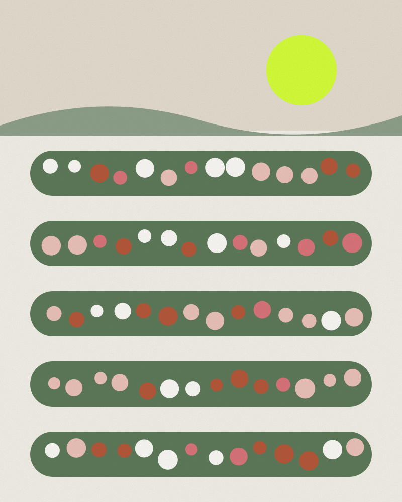

A Different Side of the City Beautiful
Beyond the postcard views: how to see Chandigarh’s best-known landmarks as a local would — slowly, on foot, and with a little context.
5 min read
City life
Food, places, culture and people across Chandigarh, Mohali and Panchkula — written by locals, verified before it’s published.

Featured

Sectors, “V” roads and green belts: the simple logic behind how Chandigarh is laid out — and why it still shapes daily life.
4 min read
Three cities, two states and one Union Territory. A quick guide to how the Tricity fits together.
3 min read
Editorial Independent recommendations — nobody paid to be included. Sponsored Paid placements, always labelled.
Places to explore
Timings, tickets and access change. We link you to the context — always check official sources before visiting.
Sector 1
Le Corbusier’s civic heart of the city, part of a UNESCO World Heritage listing since 2016.

Near Sukhna Lake
Nek Chand’s handmade landscape of sculptures built from stone, ceramics and recycled waste.
Sector 1
The city’s favourite promenade, created in 1958 at the foot of the Shivaliks.

Sector 17
The original city centre — arcades, open plazas and a long tradition of people-watching.

Sector 16
The Zakir Hussain Rose Garden, established in 1967 and home to the annual Rose Festival.
Explore by category

01
From slow weekend breakfasts to late-night street food. Our food guides list verified addresses and are updated when places change.
Food guides
02
Live music, comedy nights and the places the city goes after sunset — with event dates confirmed before we publish.
Events & nights out

04
Architecture, galleries, theatre and the heritage behind the sector grid.
Reading the sector grid05
Festivals, pop-ups and workshops across the Tricity. We only list events once dates are confirmed by organisers.
The annual events calendar
06
From Kapil Dev to Ayushmann Khurrana — meet 64 famous people from Chandigarh, with timelines and quick facts.
Famous people from Chandigarh
07
The Tricity is one daily life across three administrations. Start with our explainer.
Tricity, explained